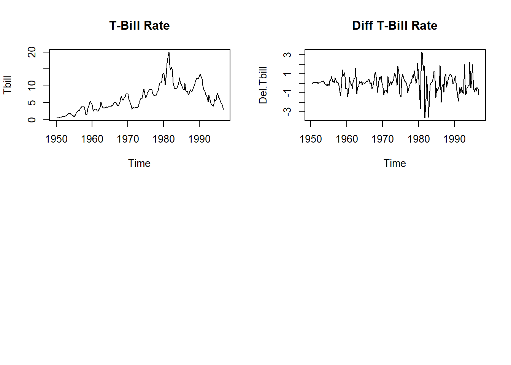
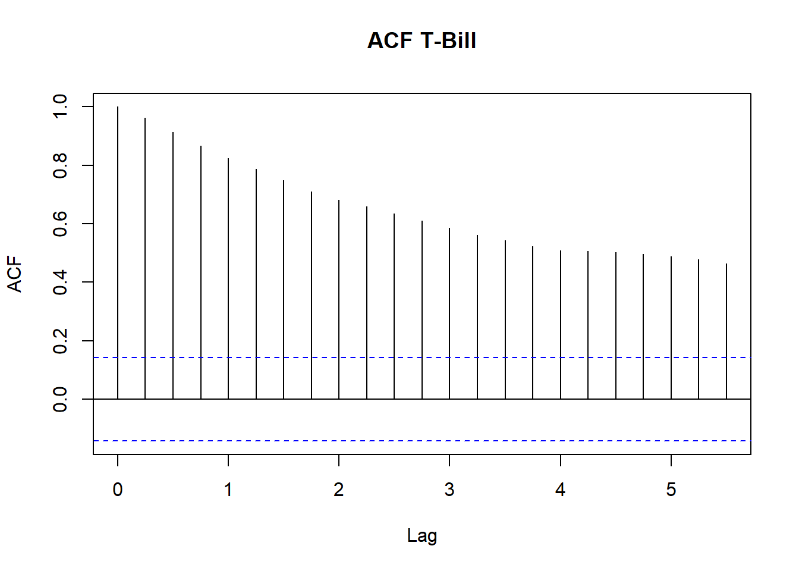
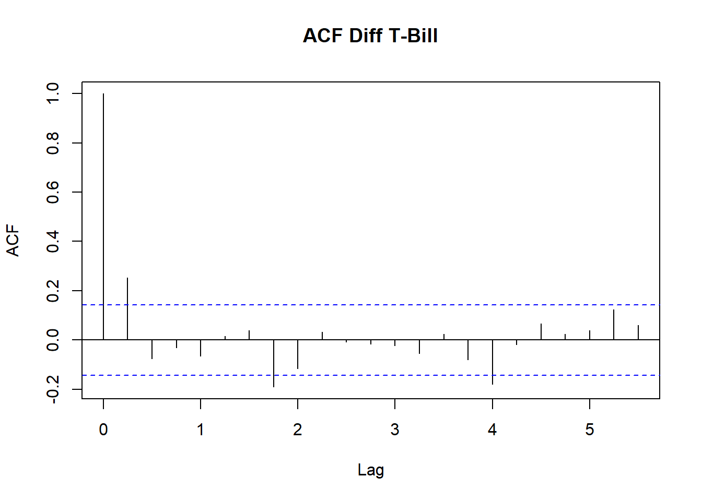
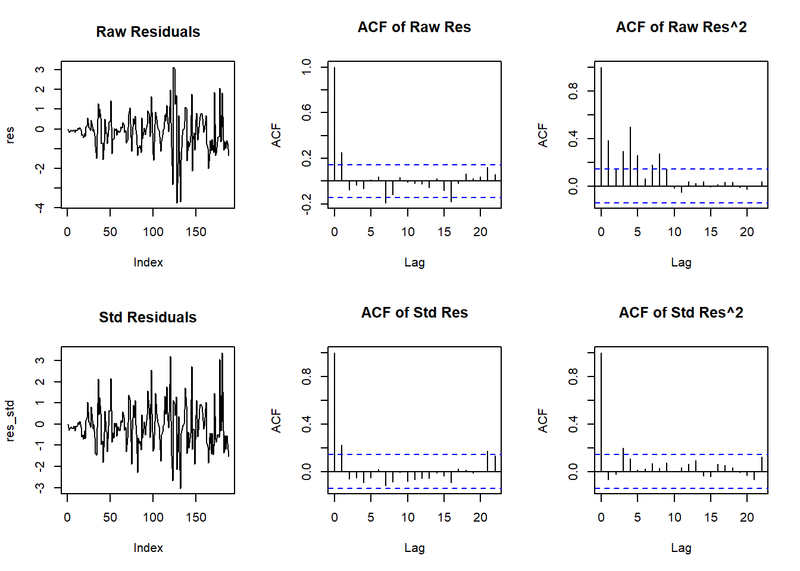
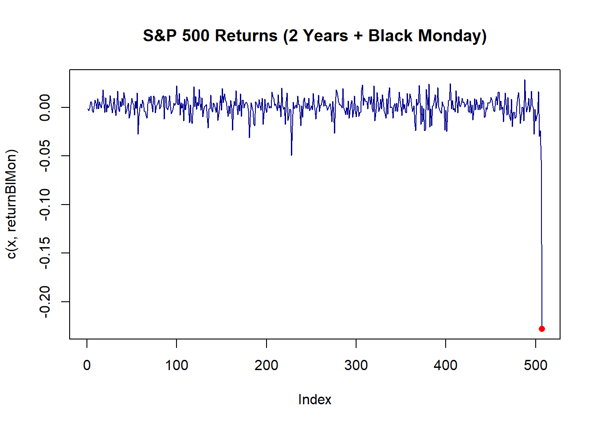
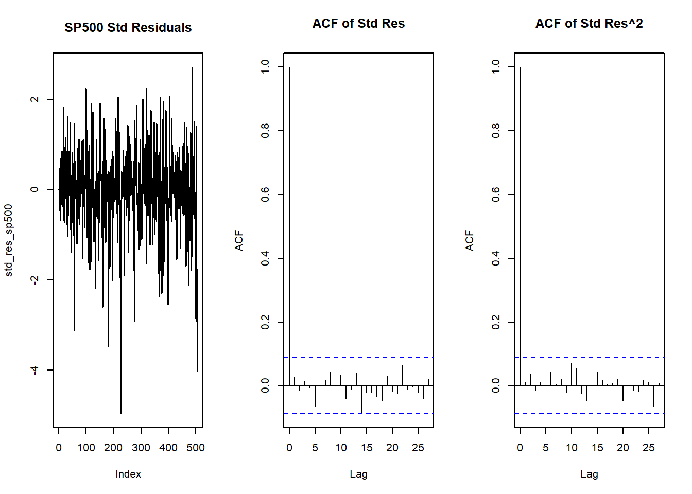

Show R code
library(Ecdat)
library(tseries)
library(fGarch)
The time series plot of the differenced T-bill reveals a calm period characterized by lower volatility from 1955 until early 1980. However, a period of high volatility emerged in 1980 and persisted until approximately 1995, after which the variance decreased. This volatility clustering indicates the presence of conditional heteroskedasticity, as the variance clearly changes over time.


The ACF plot for the T-bill seems to decay very slowly, indicating there is no stationarity; in fact, all the lags are shown to be significant in the ACF T-bill plot. For the Del.Tbill, the significant lags taper off very quickly, suggesting stationarity.
Augmented Dickey-Fuller Test
data: Tbill
Dickey-Fuller = -1.925, Lag order = 5, p-value = 0.6075
alternative hypothesis: stationaryWarning in kpss.test(Tbill): p-value smaller than printed p-value
KPSS Test for Level Stationarity
data: Tbill
KPSS Level = 2.2592, Truncation lag parameter = 4, p-value = 0.01The formal statistical tests confirm the visual findings: both the Augmented Dickey-Fuller (ADF) and KPSS tests suggest that the original T-bill series is non-stationary.
Warning in adf.test(na.omit(Del.Tbill)): p-value smaller than printed p-value
Augmented Dickey-Fuller Test
data: na.omit(Del.Tbill)
Dickey-Fuller = -5.2979, Lag order = 5, p-value = 0.01
alternative hypothesis: stationaryWarning in kpss.test(na.omit(Del.Tbill)): p-value greater than printed p-value
KPSS Test for Level Stationarity
data: na.omit(Del.Tbill)
KPSS Level = 0.1577, Truncation lag parameter = 4, p-value = 0.1For the differenced series (Del.Tbill), both the Augmented Dickey-Fuller (ADF) and KPSS tests suggest stationarity. Therefore, we can conclude that the Del.Tbill series is stationary, whereas the original T-bill series is non-stationary.
Series Initialization:
ARMA Model: arma
Formula Mean: ~ arma(1, 0)
GARCH Model: garch
Formula Variance: ~ garch(1, 0)
ARMA Order: 1 0
Max ARMA Order: 1
GARCH Order: 1 0
Max GARCH Order: 1
Maximum Order: 1
Conditional Dist: norm
h.start: 2
llh.start: 1
Length of Series: 188
Recursion Init: mci
Series Scale: 3.893927
Parameter Initialization:
Initial Parameters: $params
Limits of Transformations: $U, $V
Which Parameters are Fixed? $includes
Parameter Matrix:
U V params includes
mu -16.28698268 16.28698 1.3156528 TRUE
ar1 -0.99999999 1.00000 0.9724122 TRUE
omega 0.00000100 100.00000 0.1000000 TRUE
alpha1 0.00000001 1.00000 0.1000000 TRUE
gamma1 -0.99999999 1.00000 0.1000000 FALSE
delta 0.00000000 2.00000 2.0000000 FALSE
skew 0.10000000 10.00000 1.0000000 FALSE
shape 1.00000000 10.00000 4.0000000 FALSE
Index List of Parameters to be Optimized:
mu ar1 omega alpha1
1 2 3 4
Persistence: 0.1
--- START OF TRACE ---
Selected Algorithm: nlminb
R coded nlminb Solver:
0: 654.75227: 1.31565 0.972412 0.100000 0.100000
1: 220.33061: 1.00558 0.777917 0.668991 0.876001
2: 175.08579: 0.562600 0.527180 0.613660 0.854323
3: 113.02375: 0.399438 0.767746 0.367047 0.962259
4: 61.742819: 0.314992 0.832717 0.178222 0.951108
5: 37.969771: 0.275411 0.834279 0.117928 0.948411
6: 12.354268: 0.254233 0.843826 0.0629252 0.946363
7: 2.7396319: 0.232131 0.849348 0.0201400 0.944856
8: 0.37158028: 0.221387 0.847346 0.0404883 0.944722
9: -3.0191631: 0.191097 0.844243 0.0302357 0.943731
10: -4.0472059: 0.191011 0.848480 0.0264433 0.943566
11: -6.6488400: 0.179742 0.869788 0.0303154 0.942618
12: -6.9359743: 0.150332 0.879735 0.0208086 0.941062
13: -9.8929811: 0.123458 0.891482 0.0311256 0.940004
14: -11.022536: 0.0972063 0.907151 0.0278353 0.938717
15: -11.525089: 0.0759028 0.924278 0.0350109 0.937340
16: -14.851799: 0.105369 0.938021 0.0358062 0.936341
17: -17.723561: 0.104357 0.941428 0.0267433 0.936047
18: -19.843902: 0.103612 0.950490 0.0233139 0.935689
19: -21.596278: 0.0902085 0.988411 0.0242046 0.934683
20: -23.969411: 0.0840563 0.985781 0.0204214 0.934626
21: -25.204489: 0.0759320 0.983170 0.0184720 0.934584
22: -25.652301: 0.0675245 0.982650 0.0214016 0.934586
23: -26.198003: 0.0609371 0.986040 0.0186386 0.934449
24: -26.411068: 0.0546595 0.990010 0.0208465 0.934377
25: -26.656935: 0.0483007 0.993490 0.0179962 0.934217
26: -26.753025: 0.0421635 0.997715 0.0198496 0.934086
27: -26.783900: 0.0406995 0.998066 0.0187486 0.934068
28: -26.794667: 0.0418073 0.996841 0.0191619 0.934164
29: -26.795663: 0.0413261 0.996995 0.0190969 0.934242
30: -26.795759: 0.0411199 0.997077 0.0191746 0.934276
31: -26.795960: 0.0409954 0.997163 0.0191196 0.934392
32: -26.796032: 0.0409552 0.997114 0.0191235 0.934556
33: -26.796368: 0.0405276 0.997330 0.0191441 0.936381
34: -26.798191: 0.0405267 0.997304 0.0190245 0.943810
35: -26.799476: 0.0407872 0.997259 0.0188963 0.955407
36: -26.799492: 0.0408286 0.997257 0.0188978 0.956192
37: -26.799493: 0.0408319 0.997257 0.0188988 0.956187
38: -26.799493: 0.0408319 0.997257 0.0188988 0.956183
Final Estimate of the Negative LLH:
LLH: 228.7711 norm LLH: 1.216868
mu ar1 omega alpha1
0.1589966 0.9972569 0.2865564 0.9561833
R-optimhess Difference Approximated Hessian Matrix:
mu ar1 omega alpha1
mu -412.714840 -2122.639493 -58.21320 -5.298729
ar1 -2122.639493 -19205.047778 -371.65449 -5.214428
omega -58.213201 -371.654486 -434.08602 -66.042978
alpha1 -5.298729 -5.214428 -66.04298 -24.762394
attr(,"time")
Time difference of 0.008204937 secs
--- END OF TRACE ---
Time to Estimate Parameters:
Time difference of 0.08747292 secs
Title:
GARCH Modelling
Call:
garchFit(formula = ~arma(1, 0) + garch(1, 0), data = Tbill)
Mean and Variance Equation:
data ~ arma(1, 0) + garch(1, 0)
<environment: 0x0000024035940238>
[data = Tbill]
Conditional Distribution:
norm
Coefficient(s):
mu ar1 omega alpha1
0.15900 0.99726 0.28656 0.95618
Std. Errors:
based on Hessian
Error Analysis:
Estimate Std. Error t value Pr(>|t|)
mu 0.15900 0.07514 2.116 0.034339 *
ar1 0.99726 0.01104 90.312 < 2e-16 ***
omega 0.28656 0.06310 4.541 5.59e-06 ***
alpha1 0.95618 0.26216 3.647 0.000265 ***
---
Signif. codes: 0 '***' 0.001 '**' 0.01 '*' 0.05 '.' 0.1 ' ' 1
Log Likelihood:
-228.7711 normalized: -1.216868
Description:
Fri Oct 30 20:45:29 2026 by user: natal
Standardised Residuals Tests:
Statistic p-Value
Jarque-Bera Test R Chi^2 30.9374988 1.914289e-07
Shapiro-Wilk Test R W 0.9641854 9.949310e-05
Ljung-Box Test R Q(10) 18.5976010 4.568166e-02
Ljung-Box Test R Q(15) 21.2379771 1.293966e-01
Ljung-Box Test R Q(20) 23.1751720 2.802753e-01
Ljung-Box Test R^2 Q(10) 13.1505859 2.153739e-01
Ljung-Box Test R^2 Q(15) 16.5043695 3.493452e-01
Ljung-Box Test R^2 Q(20) 18.3429865 5.648252e-01
LM Arch Test R TR^2 12.3328406 4.193325e-01
Information Criterion Statistics:
AIC BIC SIC HQIC
2.476288 2.545149 2.475408 2.504188 Estimate Std. Error t value Pr(>|t|)
mu 0.1589966 0.07513775 2.116068 3.433906e-02
ar1 0.9972569 0.01104240 90.311627 0.000000e+00
omega 0.2865564 0.06309893 4.541383 5.588631e-06
alpha1 0.9561833 0.26215528 3.647393 2.649148e-04The model being fit at the end of problem 1 is a ARMA(1,0)/GARCH(1,0) model which is made of an AR(1) process for the conditional mean and an ARCH(1) process for the conditional variance.
The maean equation is given as: \[y_t = \mu + ar1 \cdot y_{t-1} + \epsilon_t\]
And the variance equation is given as: \[\sigma_t^2 = \omega + alpha1 \cdot \epsilon_{t-1}^2\]
Where:
\(y_t\): The differenced T-bill series (Del.Tbill) at time \(t\).
\(\mu\) (mu): The constant in the mean equation.
\(ar1\) (ar1): The autoregressive coefficient for the first lag.
\(\epsilon_t\): The error term at time \(t\) (where \(\epsilon_t = z_t \sigma_t\) and \(z_t \sim N(0,1)\)).
\(\sigma_t^2\): The conditional variance at time \(t\).
\(\omega\) (omega): The constant in the variance equation.
\(alpha1\) (alpha1): The ARCH coefficient capturing the effect of the lagged squared error.
Next, plot the residuals (ordinary or raw) and standardized residuals in various ways using the code below. The standardized residuals are best for checking the model, but the residuals are useful to see if there are GARCH effects in the series.
res = residuals(garch.model.Tbill)
res_std = res / garch.model.Tbill@sigma.t
par(mfrow=c(2,3))
plot(res, main="Raw Residuals", type="l")
acf(res, main="ACF of Raw Res", na.action=na.pass)
acf(res^2, main="ACF of Raw Res^2", na.action=na.pass)
plot(res_std, main="Std Residuals", type="l")
acf(res_std, main="ACF of Std Res", na.action=na.pass)
acf(res_std^2, main="ACF of Std Res^2", na.action=na.pass)
It seems the lag 1 is only just significant for the standardized residuals.
The autocorrelation function of the ordinary residuals is plotted from the fitted model and helps identify if the fitted model successfully captures the linear dependence. The dataset show only a significant lag at 0 but besides that lag 1 appears significant my only just.
The autocorrelation function of the squared raw residuals. and it captures the presence of volatility clustering in the residuals. There are few significant lags which indicate conditional heteroskedasticity remains.
The autocorrelation function of the squared standardized residuals is plotted to evaluate whether the fitted GARCH model successfully captured the time-varying volatility. Based on the ACF of Std Res^2 plot, the GARCH(1,0) model successfully eliminated most of the volatility clustering seen in the raw squared residuals. However, a few minor significant lags still slightly exceed the confidence bounds. This suggests that while the current model is a vast improvement, a higher-order GARCH model might be needed to capture the remaining traces of conditional heteroskedasticity perfectly.
This variable contains the time series of the estimated conditional standard deviations (\(\sigma_t\)) generated by the fitted model. It extracts the actual point-by-point volatility measurements that the model calculated for the dataset over time.
The plot of the standardized residuals shows that the variance has been successfully stabilized over time. While the raw residuals had a large amount of volatility between index 100 and 150, the standardized residuals show this volatility clustering has been flattened out, with the residuals oscillating much more evenly between -3 and 3. This seems to show that the model effectively captured the conditional heteroskedasticity.
Series Initialization:
ARMA Model: arma
Formula Mean: ~ arma(1, 0)
GARCH Model: garch
Formula Variance: ~ garch(1, 0)
ARMA Order: 1 0
Max ARMA Order: 1
GARCH Order: 1 0
Max GARCH Order: 1
Maximum Order: 1
Conditional Dist: norm
h.start: 2
llh.start: 1
Length of Series: 187
Recursion Init: mci
Series Scale: 0.1506804
Parameter Initialization:
Initial Parameters: $params
Limits of Transformations: $U, $V
Which Parameters are Fixed? $includes
Parameter Matrix:
U V params includes
mu -0.63215833 0.6321583 0.05810348 TRUE
ar1 -0.99999999 1.0000000 0.29238716 TRUE
omega 0.00000100 100.0000000 0.10000000 TRUE
alpha1 0.00000001 1.0000000 0.10000000 TRUE
gamma1 -0.99999999 1.0000000 0.10000000 FALSE
delta 0.00000000 2.0000000 2.00000000 FALSE
skew 0.10000000 10.0000000 1.00000000 FALSE
shape 1.00000000 10.0000000 4.00000000 FALSE
Index List of Parameters to be Optimized:
mu ar1 omega alpha1
1 2 3 4
Persistence: 0.1
--- START OF TRACE ---
Selected Algorithm: nlminb
R coded nlminb Solver:
0: 540.68757: 0.0581035 0.292387 0.100000 0.100000
1: 259.25047: 0.0581586 0.351171 1.04735 0.414755
2: 258.16987: 0.0582028 0.456570 1.03558 0.402981
3: 252.92212: 0.0567648 0.621745 0.555843 1.00000
4: 250.57860: 0.0568608 0.515157 0.499993 0.968312
5: 249.95602: 0.0592890 0.467358 0.474595 0.863044
6: 249.49754: 0.0629481 0.487894 0.511015 0.761121
7: 249.39429: 0.0634635 0.485750 0.496998 0.701926
8: 249.28502: 0.0660320 0.482178 0.521955 0.663386
9: 249.27601: 0.0661968 0.499800 0.526440 0.654137
10: 249.25545: 0.0672389 0.490349 0.526446 0.646265
11: 249.24348: 0.0676108 0.492259 0.531657 0.627356
12: 249.22445: 0.0789584 0.489916 0.531756 0.622016
13: 249.22436: 0.0788172 0.490070 0.531226 0.620312
14: 249.22436: 0.0788421 0.490071 0.531220 0.620625
15: 249.22436: 0.0788416 0.490071 0.531221 0.620624
Final Estimate of the Negative LLH:
LLH: -104.6908 norm LLH: -0.5598439
mu ar1 omega alpha1
0.01187989 0.49007061 0.01206114 0.62062411
R-optimhess Difference Approximated Hessian Matrix:
mu ar1 omega alpha1
mu -12197.74342 -168.269073 -7034.6179 77.646869
ar1 -168.26907 -234.866185 -192.8227 -6.463909
omega -7034.61791 -192.822733 -371223.3754 -1802.623641
alpha1 77.64687 -6.463909 -1802.6236 -32.483979
attr(,"time")
Time difference of 0.01299787 secs
--- END OF TRACE ---
Time to Estimate Parameters:
Time difference of 0.05239105 secs
Title:
GARCH Modelling
Call:
garchFit(formula = ~arma(1, 0) + garch(1, 0), data = del_log_tbill)
Mean and Variance Equation:
data ~ arma(1, 0) + garch(1, 0)
<environment: 0x0000024045723188>
[data = del_log_tbill]
Conditional Distribution:
norm
Coefficient(s):
mu ar1 omega alpha1
0.011880 0.490071 0.012061 0.620624
Std. Errors:
based on Hessian
Error Analysis:
Estimate Std. Error t value Pr(>|t|)
mu 0.011880 0.009373 1.267 0.20500
ar1 0.490071 0.065891 7.438 1.03e-13 ***
omega 0.012061 0.001961 6.150 7.76e-10 ***
alpha1 0.620624 0.210910 2.943 0.00325 **
---
Signif. codes: 0 '***' 0.001 '**' 0.01 '*' 0.05 '.' 0.1 ' ' 1
Log Likelihood:
104.6908 normalized: 0.5598439
Description:
Fri Oct 30 20:45:29 2026 by user: natal
Standardised Residuals Tests:
Statistic p-Value
Jarque-Bera Test R Chi^2 45.7945322 1.137218e-10
Shapiro-Wilk Test R W 0.9540278 9.294218e-06
Ljung-Box Test R Q(10) 11.7656943 3.010438e-01
Ljung-Box Test R Q(15) 13.3843727 5.726355e-01
Ljung-Box Test R Q(20) 14.9413492 7.797537e-01
Ljung-Box Test R^2 Q(10) 17.2548850 6.891088e-02
Ljung-Box Test R^2 Q(15) 17.4944879 2.901728e-01
Ljung-Box Test R^2 Q(20) 19.6990215 4.768933e-01
LM Arch Test R TR^2 12.2292529 4.274482e-01
Information Criterion Statistics:
AIC BIC SIC HQIC
-1.076907 -1.007792 -1.077797 -1.048902 Working with the difference of the logarithms has a few advantages over using the regular difference. It firstly approximates the percentage change, which is usually more useful for financial data. It also is advantageous as taking the log helps stabilize the variance before you even difference it. Lastly, since interest rates are positive, using the log ensures any future predictions from the model won’t end up being impossible negative rates.


Based on the plots, the AR(1)/GARCH(1,1) model appears to fit. The ACF plot of the standardized residuals shows no significant lags, indicating that the AR(1) component successfully captured the linear dependence in the mean. Similarly, the ACF plot of the squared standardized residuals shows no significant lags, confirming that the GARCH(1,1) component effectively accounted for the volatility clustering and conditional heteroskedasticity. The time series plot of the standardized residuals also displays a generally stable variance over time, without obvious prolonged periods of extreme volatility.
8.3 Would an AR(1)/ARCH(1) model provide an adequate fit? (Warning: If you apply the function summary to an fGarch object, the AIC value reported has been normalized by division by the sample size. You need to multiply by the sample size to get AIC.)
AIC
-3298.428 AIC
-3298.121 Since a lower (more negative) AIC indicates a better-fitting model, the GARCH(1,1) model is the better choice. Because the ARCH(1) model yields a higher AIC, it does not provide as adequate a fit as the GARCH(1,1) model for capturing the volatility in these S&P 500 returns.
8.4 Does an AR(1) model with a Gaussian conditional distribution provide an adequate fit? Use the arima function to fit the AR(1) model. This function only allows a Gaussian conditional distribution.
Call:
arima(x = x, order = c(1, 0, 0))
Coefficients:
ar1 intercept
0.1275 8e-04
s.e. 0.0455 5e-04
sigma^2 estimated as 9.451e-05: log likelihood = 1626.52, aic = -3247.03Based on the output, the Gaussian AR(1) model does not provide an adequate fit. The AIC for this AR(1) model is -3247.03, which is significantly higher (worse) than both the AR(1)/GARCH(1,1) model (-3298.428) and the AR(1)/ARCH(1) model (-3298.121). Because the arima function assumes a constant variance and normally distributed errors, it entirely fails to capture the conditional heteroskedasticity and heavy tails present in the S&P 500 returns.
This lab helped me distinguish between modelling the conditional mean and the conditional variance. Examining raw and standardised residuals, together with their squared values, made it clearer how to check for remaining serial dependence and volatility clustering.
The S&P 500 example also helped me connect volatility modelling to extreme returns and compare alternative specifications. I learnt that information criteria should be considered alongside residual diagnostics, rather than treating a lower AIC as proof that a model is adequate.
My next step is to check that the series used in each model matches my written explanation and strengthen my interpretation of the diagnostic results.